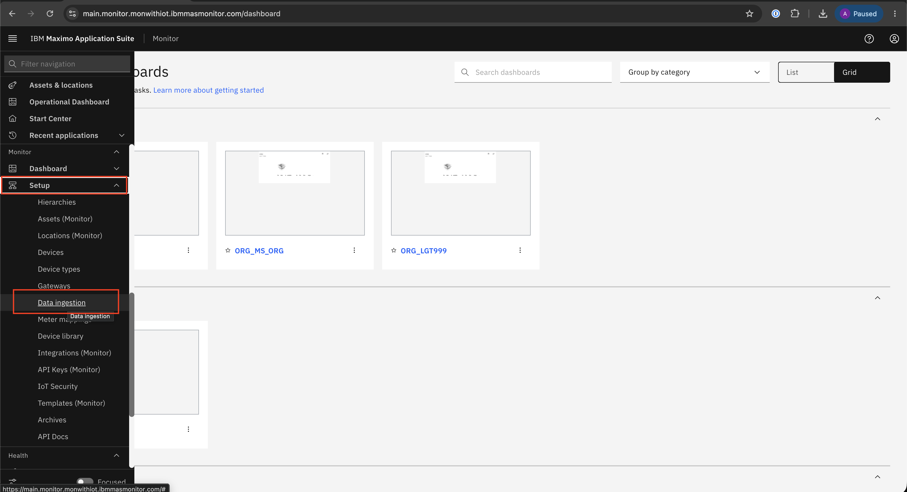
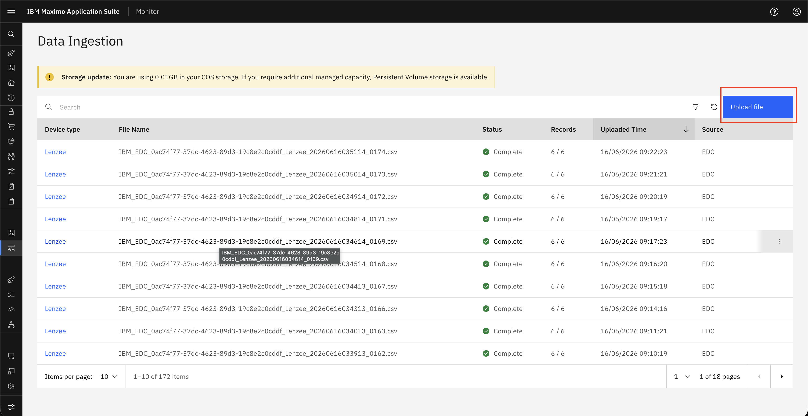
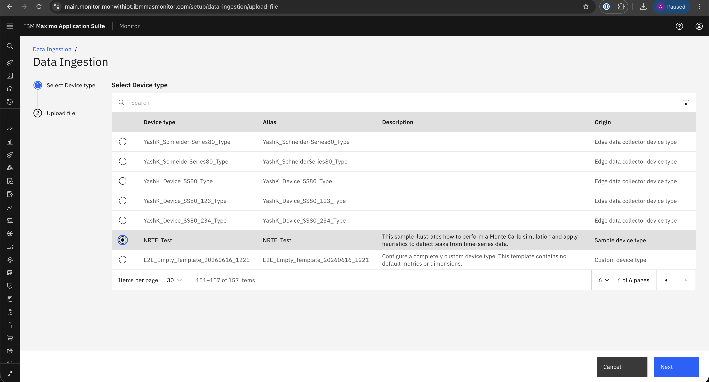
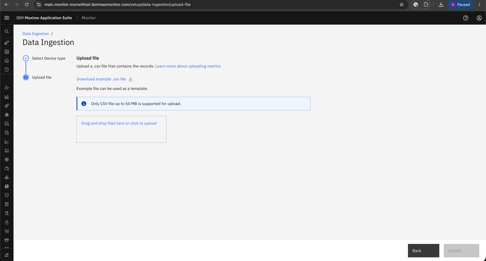
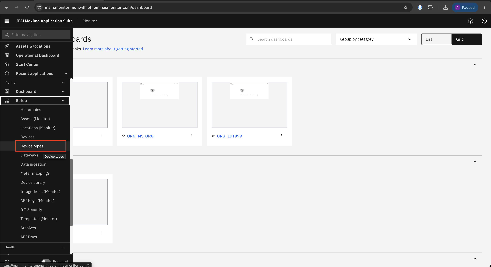
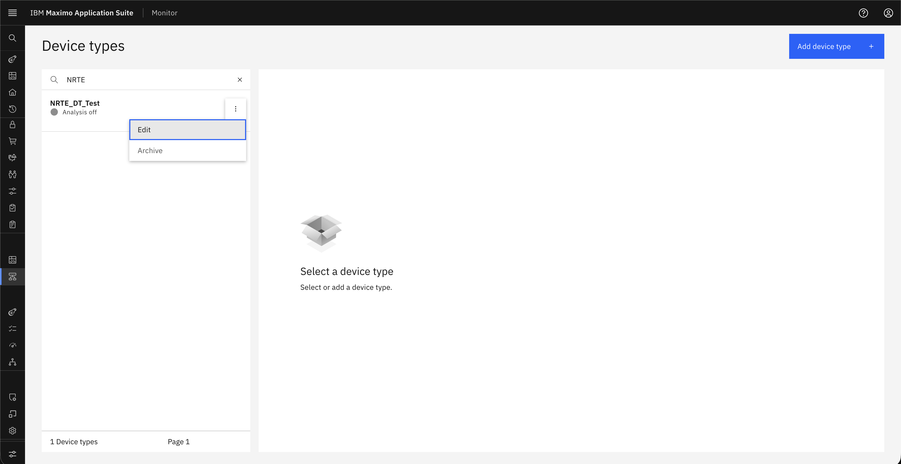
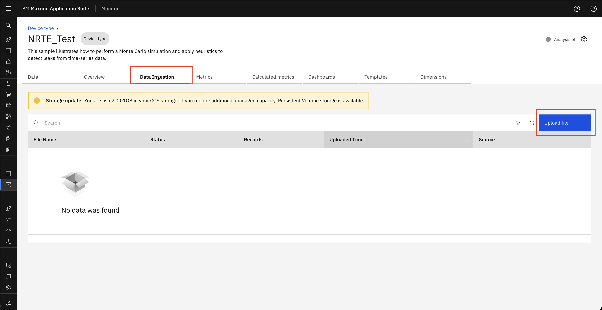

Upload CSV Files via Monitor
Objective
In this exercise, you will learn how to upload CSV files into Monitor for device data ingestion. You will use either the Data Ingestion page or the Device Type configuration flow, choose the target device type, and upload CSV files so the data can be processed by Monitor.
Info
To upload CSV files, you can use one of the following options.
Upload Options
Option 1: Data Ingestion from Setup
Step 1: Select Data Ingestion from the Menu
Navigate to Setup → Data Ingestion to access the upload interface.

Step 2: Choose Upload File
Click Upload to start the file upload process.

Step 3: Select Device Type
Select the required Device Type and click Next to proceed.

Step 4: Data Ingestion Page
Upload the CSV files to complete the ingestion process.

Option 2: Data Ingestion from Device Type
Step 1: Select Device Type from the Menu
Navigate to Setup → Device types to locate the device configuration.

Step 2: Select Device Type
Select the Device Type and click Edit to modify settings.

Step 3: Choose Upload File
Go to the Data Ingestion tab and click Upload.

Step 4: Data Ingestion Page
Upload the CSV files to complete the ingestion process.
Summary
You have learned how to:
- Access the CSV upload interface from Setup → Data Ingestion
- Access the CSV upload workflow from Setup → Device types
- Select the appropriate Device Type for ingestion
- Upload CSV files into Monitor for processing
Next Steps
Proceed to Download Template to learn how to download the template and prepare the CSV file for upload.